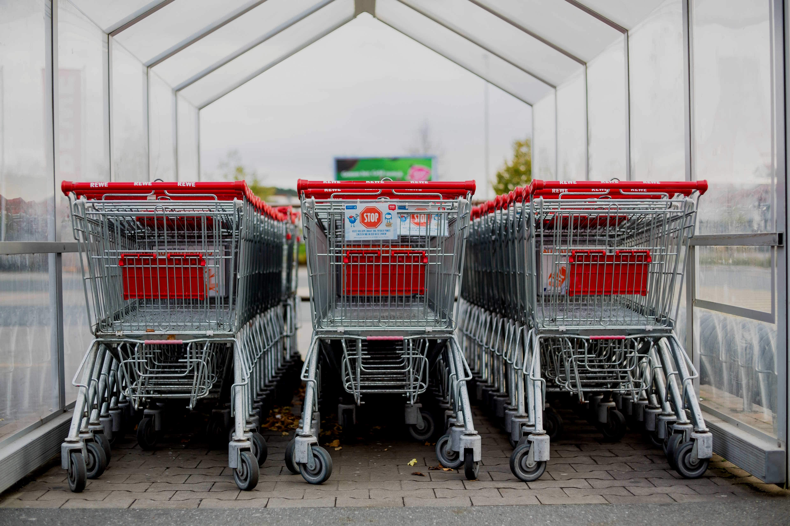

What can I do to live sustainably?

Walk, Cycle, Ride
With the rise in CO2 levels and climate change being of utmost importance, I can do my part by using public transport whenever possible to reduce my carbon footsteps and become more sustainable.
Photo by me.

Reduce, Reuse, Recycle
A classic advice, but it is a very useful one too. I can start using recycled paper for rough work at home, use reusable water bottles while travelling outside and use reusable containers to take away food so as to reduce the amount of plastic waste in Singapore and keeping a sustainable environment.
Photo by Sigmund on Unsplash

Stopping wastage
When going out to shop, I am mindful about what kind of food I buy and know whether I can finish using the product before the best before date. If eating outside, I make sure that I can finish whatever I've ordered. This is to prevent food wastage and reduce the 700,000 tonnes of food wasted in Singapore every year.
Photo by Markus Spiske on Unsplash
© Clarence Tan 2023